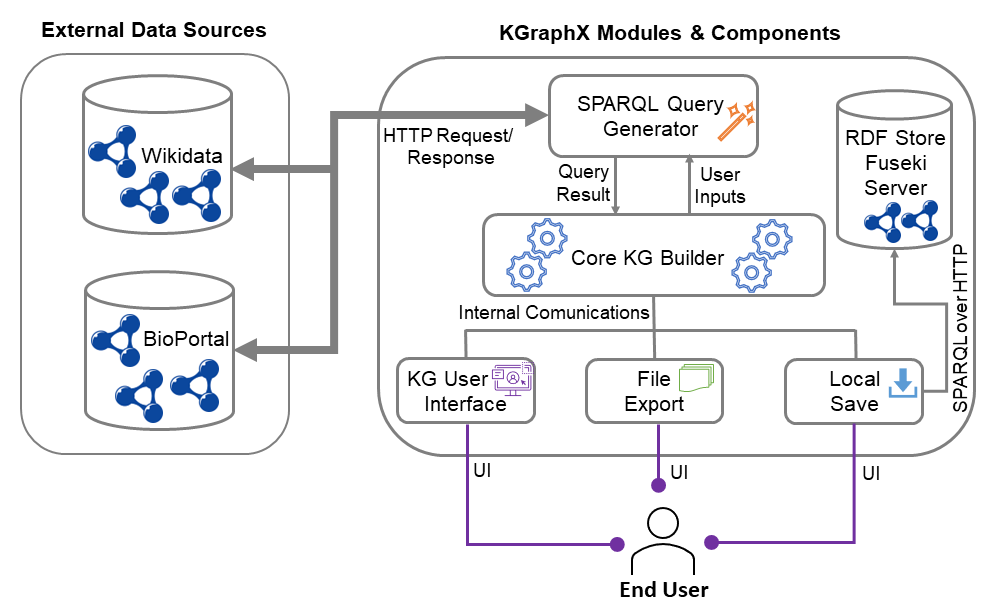

Documentation:
Overview • Architecture • FAQ • License • Contact •
Overview:
The KGraphX framework was developed by leveraging the advantages of previous KG building approaches and tools, specifically designed for novice users. KGraphX was tailored by customizing the open-source code of WebVOWL to remove unnecessary and complex functionalities while introducing new features such as the creation of visually appealing elements based on natural language, automated querying of KGs on Wikidata and BioPortal using user search input, and comprehensive listings of properties and objects associated with the selected user entity. This framework encourages the reuse of existing concepts and linked data from Wikidata and BioPortal. Furthermore, KGraphX allows for the export of user-generated KGs into RDF and RDFS formats, with the option of storing them in a local RDF storage server, such as Apache Jena Fuseki Server.
KGraphX Architecture:
The architecture of KGraphX, consists of several modules and components designed to serve as a Streamlined Visual KG Builder specifically tailored for novice users. The main modules and components are as follows:
Main Modules and Components:
- Core KG Builder: As the main component of KGraphX, the Core KG Builder provides all the web services for other internal modules. It sends user inputs to the SPARQL Query Generator, receives responses, and collects links and nodes' data for serialization to an RDF store or Turtle files. It is a JavaScript server-side component that runs a customized version of WebVOWL.
- SPARQL Query Generator: Using HTTP requests, the SPARQL Query Generator provides an automatic querying mechanism for KGs on Wikidata and BioPortal based on user search inputs. It allows users to retrieve entities and properties for reusability in the KG User Interface.
- RDF Store Fuseki Server: This server acts as a repository for storing and managing RDF data associated with KGraphX-created KGs. It provides centralized storage, ensuring the persistence and accessibility of ontologies and RDF data. It also exposes SPARQL over HTTP APIs for accessing its services.
- Export Module: With the support of the Export Module, user-developed KGs can be serialized into RDF and RDFS formats. Users have the option to download them as Turtle files or store them in the Fuseki server.
Frequently Asked Questions for Tool's Usage:
- Select Wikidata or Bioportal from the dropdown in the left side bar

- Drag and drop a resource from the left side bar
- Double click on the element
- Type inside the search box
- Select an element from the search results and you can find the results under Property details on the right side
- Drag and drop a resource from the left side bar
- Double click on the element
- Type the name you would like to add to the new entity
- Click on the 'create new entity' button
- Create 2 resources and connect them with the 'hasRelation' property
- Double click on the property box
- Any existing relation between the entities will be displayed in the pop up else create a new property using the 'Create new property' button
- Once the graph is constructed, select the option of 'Export as RDF' or 'Export as RDFS' under the Export/Save tab in the footer.
- Once the graph is contructed, if you directly wish to upload the current graph, select 'Upload current graph to Fuseki' by entering the dataset name on your Fuseki server.
- If you wish to upload a ttl file, select 'Upload TTL file to Fuseki' by entering the dataset name on your Fuseki server.